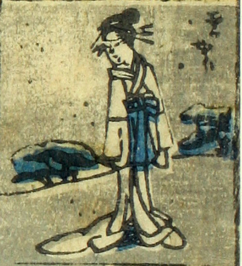

雪女；ユキオンナ，女郎；ジョロウ

雪女郎。髷に簪を数本挿し、裾の長い白い着物をまとった女が立っている。
著作者：芳盛／出典：親書誌：U426_nichibunken_0073：しん板化物尽し；シンパンバケモノヅクシ／日付：2006／資源識別子：U426_nichibunken_0073_0005_0000
Copyright (c)2010- International Research Center for Japanese Studies, Kyoto, Japan. All rights reserved.